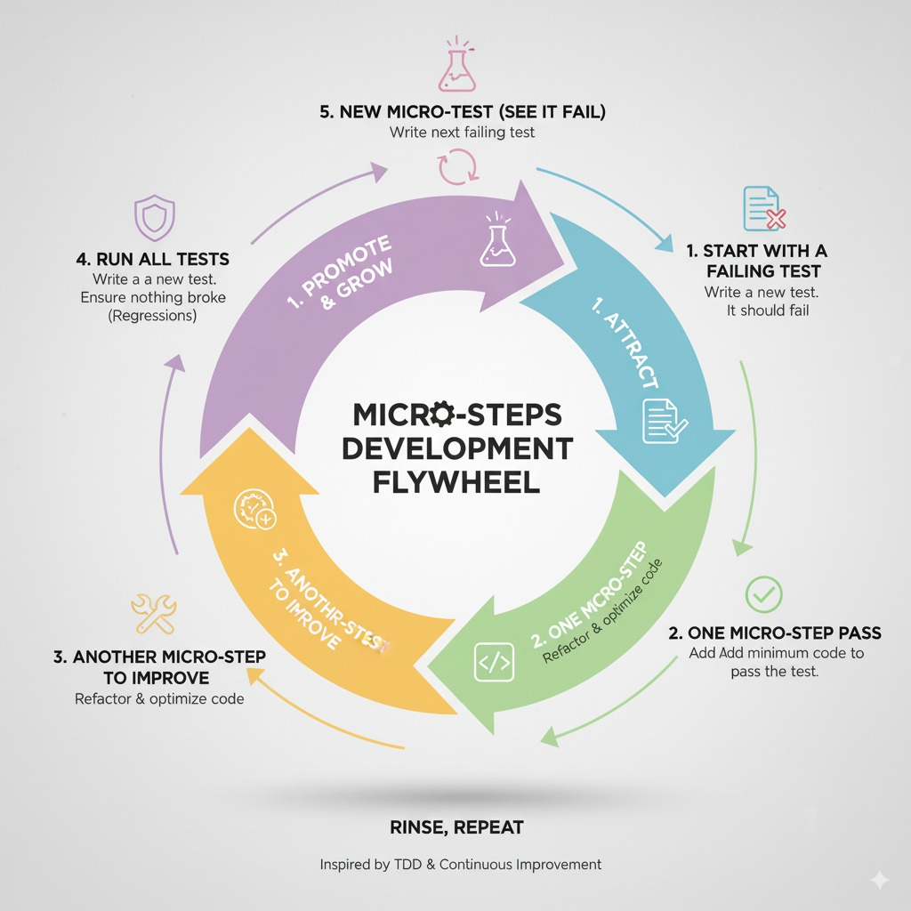

The Framework: Test-Driven Navigation
A disciplined, AI-augmented workflow for transforming legacy systems into adaptable, high-velocity assets.
Business leaders feel the "Innovation Tax" as system friction. For technical leaders, this friction manifests as brittle code, risky deployments, and a pervasive fear of touching critical systems. Test-Driven Navigation (TDN) is the operating model designed to eliminate that friction by making change small, safe, and verifiable, using AI as a precision partner, not a chaos-maker.
The Flaw of "Prompt-Driven Development"
Generative AI promised to solve the endless chore of refactoring, but its typical application often creates more problems than it solves. We call this "Prompt-Driven Development": asking an AI assistant for a large, sweeping change and hoping for a good outcome.
This approach is fundamentally a "Big Bang" delivery model, and it fails for predictable reasons:
- Un-reviewable Diffs: The AI produces thousands of lines of changed code, making a thorough human review impossible and creating hidden risks.
- Loss of Deterministic Control: The engineer loses fine-grained control, unable to guide the process or verify each incremental step.
- Risk of Hallucinated Logic: In complex scenarios, the AI can introduce subtle, incorrect, or insecure "solutions" that are difficult to spot until they cause a production incident.
This method forces engineers to abdicate their strategic role, turning them into passive prompters rather than active architects. It trades short-term speed for long-term risk and instability.
TDN: Using Tests as a Compass for AI
Test-Driven Navigation flips the script. Instead of giving the AI a vague, high-level goal, we provide it with a hyper-specific, machine-readable instruction: a single failing test.
This failing test acts as a compass, forcing the AI to work in a safe, incremental loop that every TDD practitioner will recognize. The developer remains the strategist, defining the "what" (the next desired behavior, encoded in the test), while the AI becomes a hyper-efficient pair partner, executing the "how" (making the test pass with minimal code changes).
The core philosophy is simple: Treat every change as a series of small, safe, reversible micro-bets, each one quickly verified by an executable test, not by human opinion.
The TDN Operating Model: A Step-by-Step Guide
TDN is not just a coding technique; it's a full operating model that integrates with your SDLC to de-risk modernization and accelerate delivery. Here is the high-level flow:
- Align on Outcomes: We begin by choosing the business and engineering metrics that matter most (e.g., cycle time, defect escape rate, rework). This ensures all refactoring efforts are tied to measurable value, not perfection.
- Baseline + Map Risks: Using metrics and AI-powered static analysis, we identify the riskiest, most expensive parts of the codebase. This is where change is most needed and will have the greatest impact.
- Establish Guardrails: Tests become the immutable compass. We harden the existing test suite with techniques like mutation testing to ensure our safety net is robust before we begin.
- Move in Micro-steps: This is the core Red-Green-Refactor loop. The engineer writes the next failing test, the AI proposes the minimal change to make it pass, and the engineer validates the solution. The engineer is always the pilot; the AI is the navigator.
- Review + Release: Because each change is tiny and test-backed, code reviews are fast and focused. CI gates enforce safety, and with techniques like feature flags, rollbacks remain trivial.
- Rinse, Compound, Scale: Each successful micro-refactor makes the next one cheaper and easier. This creates a compounding effect, transforming today's improvements into tomorrow's velocity.
Leader Takeaway: Trust AI as a compass, never as the pilot.
Case Snapshot: Putting TDN into Practice
Context
Mid-market platform company struggling with a legacy monolith and attached services. The team suffered from high release anxiety, rising incident counts, and slow feature throughput.
90-Day Plan
- Navigation Audit: Mapped system risks and targeted specific business outcomes.
- Guardrails in Critical Paths: Hardened test suites around the most brittle, high-value code.
- Pairing Patterns: Trained the team on how to use AI as a pair partner, with seniors mentoring while shipping.
Illustrative Outcomes (After 90 days)
- Cycle Time: Reduced from 45 days to 21 days.
- Defect Escapes: Down by 50%.
- Dev Satisfaction: Increased by +30%.
The win is a repeatable operating model, not one-off heroics.
Watch the Devoxx Belgium 2025 Presentation
The full video of my talk, "AI and the Future of Refactoring: Test-Driven Navigation"
Go Deeper
Let's discuss your current architecture, identify key areas of technical drag, and whiteboard how the TDN framework could apply to your specific challenges.
Schedule a Technical Deep-Dive